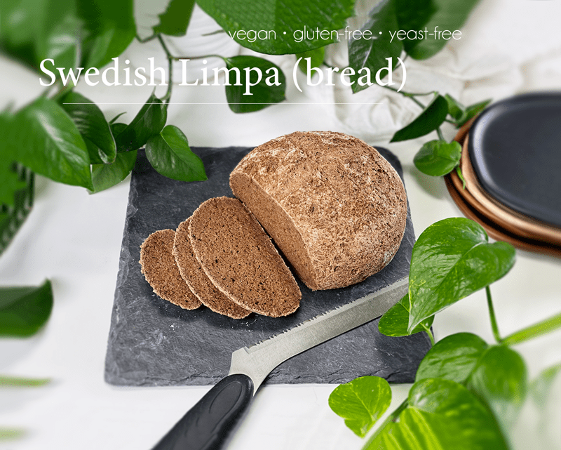
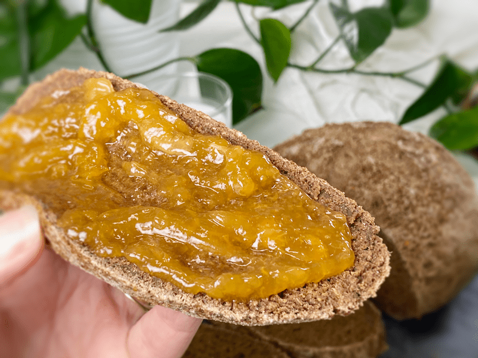
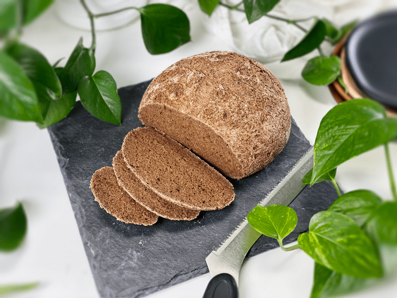

Swedish Limpa (Rye-Like Bread) | Gluten-Free | Vegan | Yeast-Free
Limpa bread is a sweet Scandinavian rye bread associated with Swedish cuisine. Today I presenting a loose interpretation of my take on it. Traditionally, it is an anise-flavored rye bread that is made up of rye, anise seed, molasses, and some have been known to add the zest of orange. The word limpa means “loaf” in Swedish, and it makes a great accompaniment to soups, a delicious sandwich base, and is excellent toasted.

Over the past few years, I have been trying to tap into my Scandinavian heritage, which makes up 38.9% of my ancestry. I have always been drawn to Norway, Sweden, Denmark, and Iceland but have yet to excel in that general direction, so until then, I will start in my very own kitchen.
In my research, I have learned that there are four grain types that dominate the Nordic countries: barley and rye are the oldest; wheat and oats are more recent. I realize that my bread ingredients will be a bit unconventional. So, if you are of Swedish heritage, please know that my goal for this recipe was to achieve the texture and flavor of Swedish limpa without compromising our health goals. So, if you can set aside the idea of not using traditional ingredients and wish to try your hand at making Swedish limpa with me — tighten up that apron and meet me in the kitchen!

Quick side story — My first attempt at this bread was a DUD! I mean a REAL dud. It didn’t rise, it was heavy like a brick, and it had a funky taste. I figured out the undesirable texture… I tested out a different gluten-free flour blend (should have known to stick to my tried and true blend), but the odd flavor and lack of loft stumped me.
Undefeated, I set out to make another loaf. When I got to the part of measuring out the baking powder, for some unknown reason, I lifted it to my nose to smell it. I smell most of my ingredients but NEVER baking soda (it doesn’t smell) but this one did and it was of garlic??? Earlier in the week Bob was cooking and used garlic powder, onion powder, and baking soda. Normally, he chases me down to smell the jars before he screws the lids back on (since he can’t smell), but this time around, he got distracted, twisted the lids on, and put them back in the spice drawer. As you can guess, the lids on the garlic powder and baking power got swapped. Mystery solved!

When I shared the story with Bob, we both chuckled because it reminded us of another incident that happened a handful of years back when I put the wrong fuel in our Volkswagen Bug. Bob typically drives whenever we motor about but this particular day, I decided to drive. On the way home, I swung into the gas station to fill the gas tank. I put jumped out of the car, removed the gas cap, jammed the nozzle in, and hit the lever. Fuel was pumping in at lightning speed.
As the tank was filling, I motioned for Bob to roll his window down. I asked him, “This car takes regular, right?” He laughed, looked at me sideways, and then looked panic. “Ahh, NO, it takes diesel! You didn’t put…” I quickly cut him off, “I DID! I DID put regular gas in the tank!” We had to tow the car home where Bob and my Uncle Lonnie tore the car apart to drain the gas tank, the fuel lines, and so forth. As soon as they reassembled the car, Bob told me to run it down to the gas station to put DIESEL in it. I have never been so nervous in my life.
So, what MADE me think to smell the jar of baking soda? I’ve never done that before. What MADE me think to question the fuel that I was putting in the car?! I’ve never done that before. I am so thankful that Bob and I operate in grace and ease when it comes to making mistakes in life. We have learned to laugh a lot throughout our marriage; getting mad just never made sense.
The texture, appearance, and flavor of this bread are spot on (according to my taste buds), despite not being made with traditional ingredients or technique. It is a rich, brown color, hearty, springy, and loosely dense. It has a deep “rye” flavor, a flavor of the earth, and one full of character. And let’s not forget about the orange zest… just enough was added to kick in as a lovely aftertaste… giving you that Swedish bread shop experience.
Slashing / Scoring the Bread
Slashing the dough properly creates a beautiful loaf of bread, plus it helps it rise in the oven. If your slashes are not deep enough, the dough may tear open on the top or bottom of the loaf, leaving you with bread that tastes delicious but doesn’t live up to its artistic potential. The loaf can also end up being a touch dense if you don’t slash deep enough, because it won’t open up to release all the steam building up.
-
Use a very sharp knife. If your knife blade is dull, it will drag through the dough rather than cutting it.
-
Lightly dust the dough with any flour used from the recipe for the easiest cut. The flour helps the knife slide through the dough without sticking.
-
Slash/Score Depth: I like to make my cuts about 1/4” – 1/2” deep. If the slash is too shallow, you may have a blowout or a tear in the dough.
Cooling Time and Its Importance
Don’t allow the intoxicating aroma of freshly baked bread to entice you to cut the bread too soon after removing it from the oven. The loaf needs to cool at least 30 minutes, and ideally more like up to two hours. When you pull the bread out of the oven, it is still baking inside. Cutting into a loaf too early will stop this process and result in a very gummy loaf.
I hope I didn’t bend your ear too long on this post. It was fun to reminisce. If you find yourself adventurous and you make this bread, please be sure to leave a comment below. I want to give a special thank you to Juanita, who inspired me to make this bread in one of our Facebook group postings. blessings, amie sue
 Ingredients
Ingredients
Yields one loaf
Psyllium Gel
Main Bread Ingredients
- 1 cup (100 g) gluten-free, rolled oats, ground
- 3/4 cup (100 g) sorghum flour
- 1/2 cup (100 g) raw hulled buckwheat, ground
- 1/4 cup (40 g) arrowroot powder
- 2 Tbsp (12 g) raw cacao powder
- 2 Tbsp (20 g) coconut sugar
- 1 Tbsp (7 g) caraway seeds, ground
- 1 tsp (3 g) aniseed, ground
- 1 tsp (3 g) fennel seeds, ground
- 1 tsp (6 g) sea salt
- 1 tsp (4 g) baking powder
- 1/2 tsp (3 g) baking soda
- 2 Tbsp (38 g) blackstrap molasses
- 1 tsp (3 g) zest of one orange
Preparation
Psyllium Gel
- In a bowl, whisk together the water and psyllium.
- Set aside to thicken while preparing the dry ingredients.
Dry Ingredients
- In the mixing bowl that we are going to knead the bread in, whisk together the ground oats, sorghum flour, ground buckwheat, arrowroot, cacao powder, coconut sugar, caraway seeds, aniseed, fennel seeds, salt, baking soda, and baking powder.
- To grind the seeds of caraway, anise, and fennel, place them in a coffee/spice grinder and break them down to a powder.
Mixing and Baking the Dough
- Preheat the oven to 350 degrees.
- Add the psyllium gel, molasses, and orange zest to the dry ingredients.
- Using either a hand mixer or a free-standing mixer with dough attachments, knead for 5 minutes (set a timer on your phone) to ensure that it gets kneaded enough (don’t we all love feeling needed?).
- Start the mixer on low until the flour is folded in, then turn it up one speed. If you start off at too high a speed, the flour will jump out of the bowl.
- Shape the dough into a round or oblong shape and place it on the baking sheet.
- Score the top of the bread with the tip of a sharp knife, 1/4″-1/2″ deep.
- Dust the top of the dough with coconut sugar.
- Bake on the center rack for 50-60 minutes.
- Take the loaf out of the oven and turn it upside down. Give the bottom of the loaf a firm thump! with your thumb, like striking a drum. The bread will sound hollow when it’s done.
- When it’s done baking, slide it onto a cooling rack and wait to cut when cool.
Dutch Oven Method (if using)
- Place the empty Dutch oven and lid inside the oven and preheat the oven to 350 degrees (F).
- Once preheated and bread is ready to bake, remove the Dutch oven and place it on the stove. Be careful not to touch the Dutch oven or lid without oven mitts because it will be hot! Place the dough on a piece of parchment paper and transfer it into the HOT Dutch oven. Cover with the hot lid and bake for 50 minutes.
- Remove hot lid and bake another 10 minutes.
- Use the parchment paper to lift the bread out of the Dutch oven and cool on a wire rack until nearly room temperature before slicing.
Storage
- Once the bread has thoroughly cooled, you can wrap it. It should last up to roughly 5 days.
- Brown paper bag: This will better protect your loaf and allow for good air circulation, meaning that your crust won’t get soft. Some people claim that a sliced loaf stored cut-side down in a paper bag will stay the freshest.
- Plastic bag: If you want to avoid staling at all costs, go with a plastic bag. Make sure to get as much air out of there as possible before sealing. Your crust will soften, but your bread won’t dry out or harden prematurely. Make up for unwanted softness with toasting.
- Tea towel: Wrap the bread in a tea towel, then place it in the bread box.
- Fridge: Whether you store it in the fridge is up to you. Many people feel that bread in the fridge turns stale quicker. If you’re not going to finish a loaf in the first few days after baking it, you might want to freeze it until you’re ready to eat it.
- Freezing: Rather than freezing the loaf as a whole, preslice it and place wax or parchment paper in between each slice before sliding it into a freezer-safe container. That way you can pull out 1,2, or as many slices as you want.
© AmieSue.com